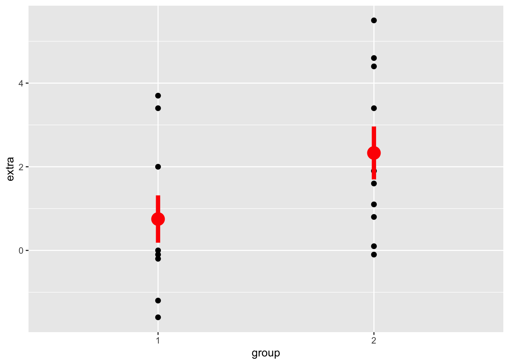

library(ggplot2)
ggplot(sleep, aes(y = extra, x = group)) +
geom_point(size=2) +
stat_summary(fun.data=mean_se, color = 'red', size = 1.25, linewidth = 2)
lmod <- lm(extra ~ as.factor(group), data = sleep)
summary(lmod)
Call:
lm(formula = extra ~ as.factor(group), data = sleep)
Residuals:
Min 1Q Median 3Q Max
-2.430 -1.305 -0.580 1.455 3.170
Coefficients:
Estimate Std. Error t value Pr(>|t|)
(Intercept) 0.7500 0.6004 1.249 0.2276
as.factor(group)2 1.5800 0.8491 1.861 0.0792 .
---
Signif. codes: 0 '***' 0.001 '**' 0.01 '*' 0.05 '.' 0.1 ' ' 1
Residual standard error: 1.899 on 18 degrees of freedom
Multiple R-squared: 0.1613, Adjusted R-squared: 0.1147
F-statistic: 3.463 on 1 and 18 DF, p-value: 0.07919